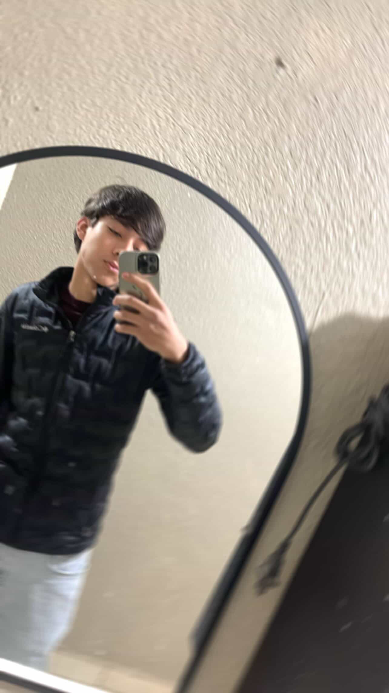

nos conocimos en la secundria donde vivia antes (algodones) desde 2do de secundaria por que en primero estabamos en cuarentena, pero en realidad lo conoci en la primaria y yo no sabia, hasta que el me dijo y cheque la foto grupal y ahi estaba el en la foto, bueno hasta ahorita seguimo hablando pero no somos nada pero es como si fueramos novios pero no somos nada esta bien raro pero me dejo confundir por mensa. no lo he mirado desde hace como 3 o 4 meses que no voy para algodones, espero que nos miremos pronto porq lo ectraño un monton

volver al index